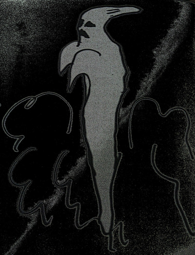
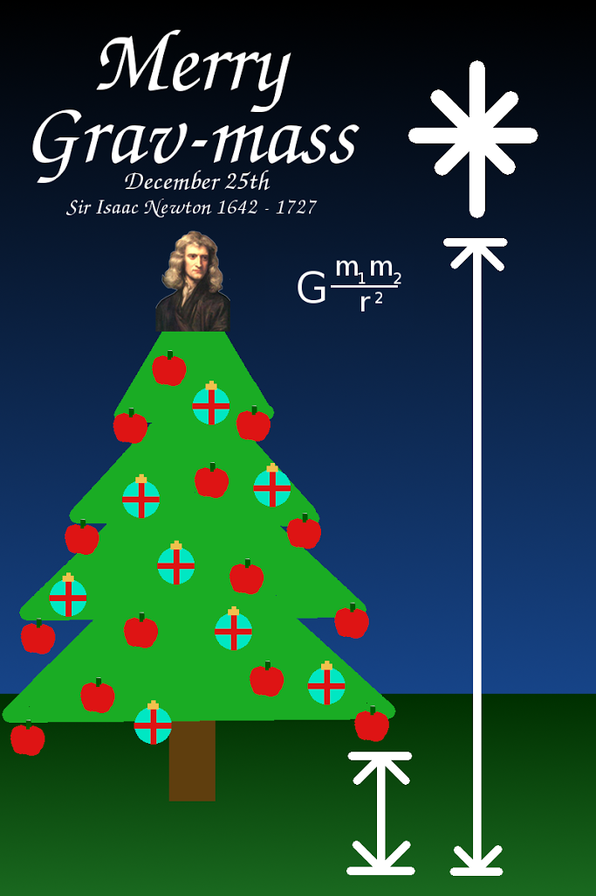

Entah sudah ke-berapa kali saya naik KA Pasundan, kereta yang wajib mengalah setiap kali berpapasan dengan kereta berkelas lebih tinggi ini. Dulu pernah tertulis di tiketnya, kereta ini dijadwalkan sampai Surabaya pukul 19.38. Sekarang, sepertinya PT KAI sudah menyadari bahwa kereta ini jarang sekali tiba di tujuan Stasiun Gubeng sebelum pukul 21.00, maka dituliskan pukul 21.38 sebagai jam kedatangannya di Surabaya. Continue reading
LAIN-LAIN
There are 18 posts filed in LAIN-LAIN (this is page 1 of 2).
Aktif di wattpad
Setelah dua tahun lebih punya akun di Wattpad (dan tak pernah aktif) akhirnya hari ini saya memutuskan untuk mulai buat aktif di sana untuk latihan menulis fiksi.
Link profil Wattpadku: @IhsanAriswanto
Memahami Hantu

Minggu ini, saya sedang membaca The Science of Ghosts, karya Joe Nickell. Berhubung belum tuntas membaca, saya tidak bisa menuliskan reviewnya saat ini. Gara-gara baca buku ini, saya jadi ingin menceritakan sudut pandang saya sendiri terhadap dunia perhantuan.
Sejak kecil saya suka sekali dengan cerita hantu. Selalu ada sesi cerita memedi dengan teman-teman masa kecilku, entah saat bosan bermain, waktu istirahat sekolah, atau saat menunggu azan magrib sebelum mengaji di masjid. Seringkali cerita memang hanya diulang-ulang, terutama jika ada teman yang belum pernah mendengarnya. Jika ada cerita fresh, kami akan sangat senang sekali. Continue reading
Lawatan Presiden ke Papua Nugini
Presiden berkunjung ke Papua Nugini. Harapan saya: hubungan ekonomi RI – PNG makin menguat. Indonesia menatap ke timur. Papua dan Papua Barat jadi gerbang ke arah PNG dan negara-negara Pasifik lain.
Maret 2015 lalu, sudah ada wacana Indonesia akan ekspor beras (terutama beras premium) ke Papua Nugini (sumber: Kontan).
Pindah dari Blogspot ke WordPress
Setelah mempertimbangkan beberapa faktor, saya putuskan untuk menyewa hosting sendiri dan menggunakan wordpress.org sebagai platform blog. Untuk alamat webnya, tetap sama www.ariwanto.web.id
Tulisan-tulisan sebelumnya saya impor langsung dari blogspot ke wordpress ini. Beberapa layout tulisan mungkin akan kacau, juga gambar-gambar banyak yang tidak muncul.
Mohon maaf atas ketidaknyamanan para pembaca.
Grav-mass Season…

Tanggal 25 Desember kita memperingati lahirnya Sir Isaac Newton sekaligus merayakan penemuan-penemuannya antara lain Hukum Gravitasi.

Jangan Biarkan Perasaan Bersalah Menguasaimu

 |
| Gambar dicomot dari: Guiltless |
“I shouldn’t have done that”“It’s all my fault”“I should have known better”
Aku sendiri juga merasakan, sangat sering merasa bersalah. Rasa bersalah yang kemudian menjadi sangat membebani.
Ada beberapa bacaan bagus buat kamu yang juga merasa terbebani oleh rasa bersalahmu:
Ternyata Google Udah Menghentikan Blokir .CO.CC
Tadi iseng saya cek site:.co.cc di kolom pencarian Google, eh ternyata sub domain CO.CC sudah terindeks kembali. Demikian juga .co.nr dan .co.tv yang juga sempat diblok juga sudah nongol di pencarian Google. Agak telat saya taunya, ternyata udah dari awal Desember ini.
Sejak pertengahan tahun 2011 yang lalu, Google menghilangkan situs dengan subdomain .co.cc, .co.nr, dan .co.tv dari halaman pencarian. Kurang jelas apa alasan Google melakukan hal tersebut.
Buat pemakai .co.cc, selamat deh webnya bisa terindeks lagi. Berharap pengelola .co.cc bisa lebih hati-hati agar subdomain ini tidak dipakai untuk spam dan scam.
Laundry Syar’i Belum Banyak di Jogja
Bisnis laundry di Jogja memang udah menjamur. Dari kota sampai deket rumah saya yang di kaki bukit ini pun ada. Apalagi di kawasan deket-deket kampus, persaingan laundry udah gila-gilaan.
Beberapa hari yang lalu, saya sengaja iseng-iseng survey ringan. Naik motor, melihat-lihat kios laundry, mulai dari deket rumah, sampai kawasan Jalan Kaliurang, sekitar KM 7 atau 8.(1)
Yang saya lihat, kebanyakan laundry menawarkan: bersih, rapi, wangi, dan cepat. Namun, bukan itu yang saya cari. Saya ingin menemukan laundry yang berani memberi jaminan: suci.(2)
Dari hasil jalan-jalan itu, saya hanya menemukan satu laundry yang berani menjamin suci. Lokasinya ada di kawasan Krapyak, dekat dengan ponpes Krapyak. Dan itu pun, waktu saya lewat, laundrynya tutup. Mungkin tempat lain ada, tapi tidak terlewati survey saya.
Padahal menurut saya, umat Islam butuh laundry yang bisa memberi jaminan suci dalam proses mencucinya. Gak main-main ini, masalah sah shalat. Apalagi ummat Islam Indonesia yang sebagian besar bermazhab Syafi’i, sangat teliti masalah kesucian.
Hasil googling, saya temukan, di beberapa kota sudah mulai ada laundry yang berani menjamin suci. Di Malang ada, di Jakarta, bahkan di Denpasar saja ada. Di Sleman ada juga, yang dikelola pengurus ranting NU Tempel.
Saya kira, ini justru peluang usaha juga. Apalagi untuk kawan-kawan yang lulusan ponpes. Meskipun pihak laundry sedikit harus kerja lebih dari biasanya (tidak berat juga sebetulnya), namun laundry syar’i ini punya pasar tersendiri. Kalau diolah lagi, bahkan bisa jadi nilai plus dibanding laundry-laundry lain.
Kalau Anda mau buka laundry seperti ini, saya akan jadi pelanggan Anda.. :D.
Catatan:
(1) Saya memang pengangguran terselubung, jadi banyak waktu untuk survey gak jelas semacam itu, hehe..
(1) Saya memang pengangguran terselubung, jadi banyak waktu untuk survey gak jelas semacam itu, hehe..
(2) Bagi umat Islam, memang ada beda antara bersih dengan suci. Sebab pakaian suci, punya kriteria tersendiri. Kesucian pakaian merupakan salah satu syarat sah salat.
Tentang Budidaya Semut
Kebutuhan telur semut (kroto) sebagai pakan burung kian hari kian meningkat. Budidaya semut pun menjadi tawaran yang menggiurkan. Apalagi harga kroto pun mencapai 80 ribu hingga 100 ribu rupiah per kilonya. Itu pun, stok belum tentu ada. Saat ini, persaingan budidaya semut masih sangat rendah. Sehingga usaha yang satu ini masih punya peluang yang sangat besar.
Hal penting yang perlu diperhatikan dalam budidaya semut adalah:
- Pencarian bibit, ini hal yang mudah-mudah susah. Mudah bagi yang tinggal di daerah pedesaan, dan susah bagi yang di perkotaan.
- Penyediaan media budidaya, hal ini sangat mudah karena tidak memerlukan tempat luas. Bahan-bahan yang dipakai pun bisa didapat dengan mudah.
- Perawatan, bukan hal yang susah, hanya memerlukan kesabaran.
- Penjualan, sama sekali bukan masalah. sampai sat ini, permintaan kroto masih sangat besar. Bahkan ada yang mau membeli dengan harg berapapun (tentunya harga wajar).
Saya sendiri mendapatkan “ilmu” budidaya semut ini dari krotosemut.com, silakan merujuk ke webnya untuk info lebih banyak.